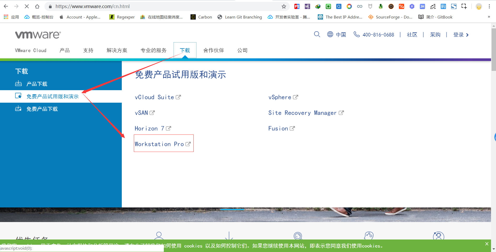
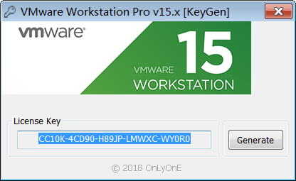
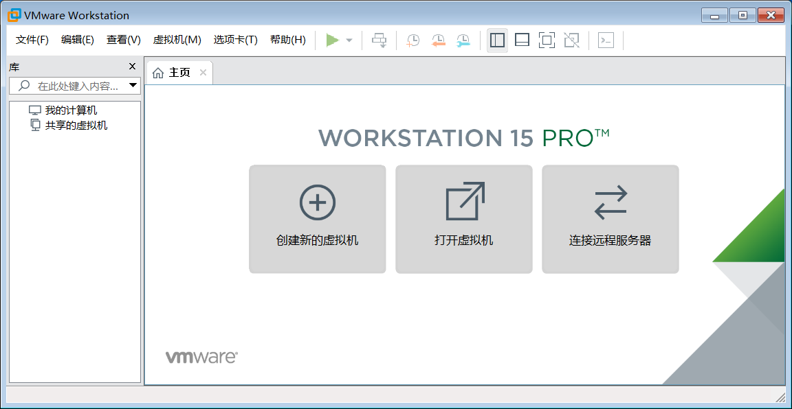
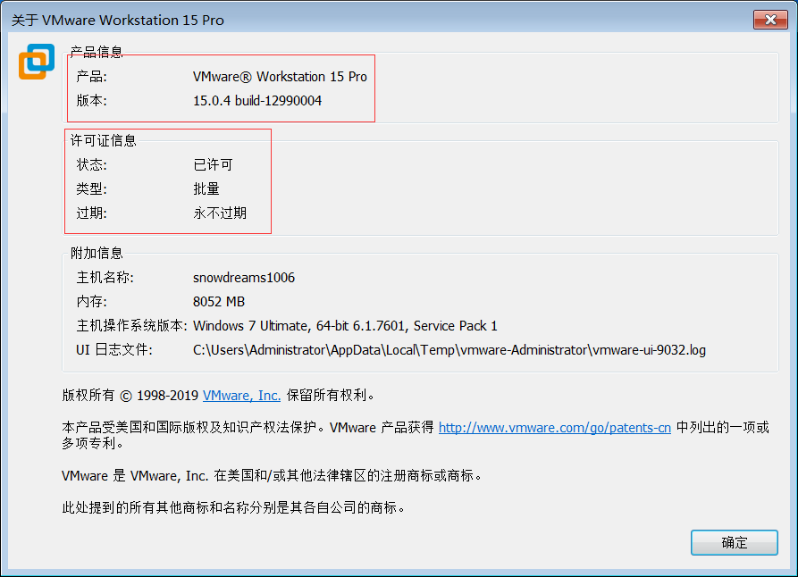

1. 给 windows 装个 vmware 虚拟机
如果长时间处于同一种环境,慢慢得我们会觉得有些无聊,所以适当地出去走走看看外面的世界能带给我们不一样的体验.
所以,何不出去走走,看看另一个世界?
然而,平时需要工作很难抽身无所顾忌地潇洒走开,这是不是意味着无法离开,要画地为牢了呢?
既然是工作问题,那么我们就从工作本身开始改变,我们每个人的电脑正常来说都只有一个操作系统,如果有一种方式能够让你切换到另一种操作系统上,岂不是相当于计算机的旅游了吗?
虽然我们本人不能亲身去另外一个地方看看,就让计算机代替我们去体验不同的环境吧!
虚拟机理论上支持任何操作系统,换句话说,
Windows系统可以装Windows,也可以装Mac和Linux等等.
1.1. 如何换个新环境
Windows 电脑想要体验另一种操作系统,最简单的方式莫过于借助虚拟机方式,何为虚拟机?
虚拟机（Virtual Machine）指通过软件模拟的具有完整硬件系统功能,运行在一个完全隔离环境中的完整计算机系统.
虚拟机,顾名思义就是虚拟的计算机,虚拟意味着并不是真正的,计算机意味着拥有普通电脑的基本功能. 所以虚拟机要表达的意思就是说,创建一台并不是真实的计算机,但这种计算机却拥有普通计算机的基本能力.
正是由于虚拟机概念的提出,使得原本单一的操作系统支持多种不同的操作系统.Windows 计算机可以装Windows ,也可以装 Mac ,当然还有开发人员专用的 Linux.
原来的计算机称之为物理机也叫作宿主机,新产生的计算机就是虚拟机.
只要有明确的目标,虚拟机就能带你的计算机去另外一个世界.
平时不敢在物理机进行的秘密实验,你可以搬到虚拟机去实验;
羡慕键盘如飞的电脑黑客,你可以装个 Linux 虚拟机去体验一把命令行操作的灵活自由;
某些操作只能使用 Mac 电脑完成而苦于身边没有 Mac 电脑,也可以装个 Mac 虚拟机感受一下苹果的优雅.
...
不论是哪一种应用场景,虚拟机基本上都能满足,值得注意的是,虚拟机虽好,不要贪多哟!
只有物理机的性能足够强劲,才建议安装虚拟机,否则的话,病怏怏的身体怎么承受得住活泼好动灵魂的折腾.
1.2. 安装虚拟机软件
市面上的虚拟机软件可选性有不少,而我主要介绍的是 VMware 软件的解决方案.
VMware软件不仅支持Windows宿主机,也支持Mac宿主机,而且一直在用也挺好的.
既然应认定了 VMware ,那还等什么,赶紧出来让我们看一眼吧!
百度搜索 vmware 或者直接进入 https://www.vmware.com/cn.html 即可访问 vmware 官网.

如果无法访问,可能需要另辟蹊径,具体原因你猜猜看.
打开 下载 > 免费产品试用版和演示 > Workstation Pro 查看下载页面.

跳转到下载页面后,选择 Windows 版本,点击 立即下载,耐心等待文件下载.
Windows下载链接: https://www.vmware.com/go/getworkstation-win
下载完毕后,双击 VMware-workstation-full-15.0.4-12990004.exe 进行默认安装,安装过程比较简单,以下动图仅供参考.
产品密钥可以使用
KeyGen.exe自动生成,也可以从下列密钥中随意挑选一个.

GF1T2-D8G97-M85MY-LDMNC-PZA96
AV34H-DDG8L-48EXQ-CQZET-ZZUR2
YY51H-FJXEQ-H85YQ-U5M5X-Q38D0
VY74R-FXX81-085PQ-DMMQT-X2AF6
VY10K-8WY03-H808Y-35YZE-NKKV2
YY11K-8UY46-M88MP-VMYEE-MYAF6
AA30K-27ZEL-480DQ-3DZ7C-MQKU4
VV7N8-D2E41-M852Q-8EQEX-ZQRU0
VC190-46W06-08E8P-TGQ5T-MLR8D
AZ3NH-DQX9N-488RP-15ZXC-Q68VA
现在 vmware 已经安装成功,接下来我们将创建新的虚拟机,开始真正的计算机换装旅行吧!

在菜单栏依次点击 帮助 > 关于 确认一下是否注册成功.

虽然提供激活码注册方式,但是还是想说有条件的小伙伴请支持正版!
1.3. 回顾总结
本文主要介绍了什么是虚拟机和虚拟机的应用场景以及如何安装 Vmware 软件从而安装虚拟机.
简单来说,虚拟机就是运行在本机上的一个虚拟独立的计算机,虽然不是真实的物理机,但是却拥有计算机的基本属性,不论是想在新电脑上瞎折腾还是想体验不同的操作系统,虚拟机都可以满足你的需求.
值得注意的是,虚拟机虽好,不要贪多哟,毕竟虚拟机很占资源,如果宿主机本身不给力的话,虚拟机也很难流畅地运行.
下节预告:
- 给 windows 虚拟机装个 windows
- 给 windows 虚拟机装个 centos
- 给 windows 虚拟机装个 ubantu
作者: 雪之梦技术驿站
链接: https://snowdreams1006.github.io/tools/windows-install-vmware.html
来源: 雪之梦技术驿站
本文原创发布于「雪之梦技术驿站」,转载请注明出处,谢谢合作!